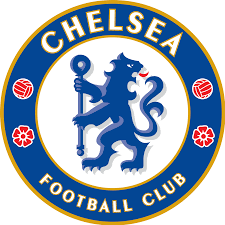

영국 잉글랜드 프리미어 리그의 프로 축구 클럽. 연고지는 런던.[14] 홈 구장은 스탬퍼드 브리지. 창단 연도는 1905년이며 팀 컬러는 전통적으로 푸른색과 흰색의 조합을 사용한다. 영국 클럽 최초의 UEFA 주관 3대 메이저 대회[15] 우승, 리그 우승 6회, FA컵 우승 8회, EFL컵 우승 5회 등의 기록을 보유하고 있는 잉글랜드를 대표하는 빅클럽 중 하나이다. 또한 첼시는 영국 클럽중 FIFA FIFPro 월드 XI 최다 수상[16]의 기록 또한 보유하고 있다. 구장이 먼저 지어지고 소유권을 구단이 산 케이스다. 창립주 거스 미어스는 영국의 축구 열풍을 노리고 자신의 구장을 만들어 그곳에서 경기를 할 수 있도록 1904년, 지금의 스탬퍼드 브리지를 매입한다. 풀럼에 위치한 스탬퍼드 브리지는 원래 풀럼 FC에게 제공될 예정이었으나, 구장 임대비가 비싸 거절당했다. 이때 마침 런던의 철도 회사 '그레이트웨스턴레일웨이'가 이 구장을 석탄 저장고로 매입하겠다는 제안이 들어와 첼시 FC 창업주 거스 미어스는 갈등했지만 친구 프레드 파커의 설득으로 1905년 자신의 구단을 새로이 창립한다. 이것이 첼시 FC의 시작이다. 삼성은 파란색의 팀 컬러를 생각해 2005년부터 첼시를 스폰했는데, 첼시 팬인 여러 대기업 오너들과의 인맥 등을 고려한 결과 첼시가 3시즌(2006-07~2008-09) 리그나 챔스를 우승하지 못했음에도 불구하고 거액의 스폰 계약 연장을 했다. 그리고 2009-10 시즌 첼시가 더블을 달성하면서 삼성도 기업 이미지 측면에서 많은 이익을 보았고 2011-12 시즌 첼시의 챔스우승 이후 스폰서 계약 연장을 체결했다. 하지만 삼성에서 더이상 마케팅할 필요가 없다고 판단했는지 2014-15 시즌을 끝으로 첼시 유니폼에서 삼성 로고는 볼수 없게 되었다.[17] 이후 첼시는 일본의 요코하마 타이어와 계약함으로써 막대한 스폰 금액을 챙겼는데 5년간 4000만 파운드(720억원)로 프리미어리그 사상 두 번째로 높은 금액이다. 2020년 1월 24일, 유니폼 메인 스폰서를 영국 통신회사 '3'와 체결하였다. 2020-21 시즌부터 3년간 유니폼 정면에 3을 볼 수 있을 것이다. 기존의 요코하마 타이어는 타이어 파트너로 관계을 지속할 예정이다.
주요 선수들 